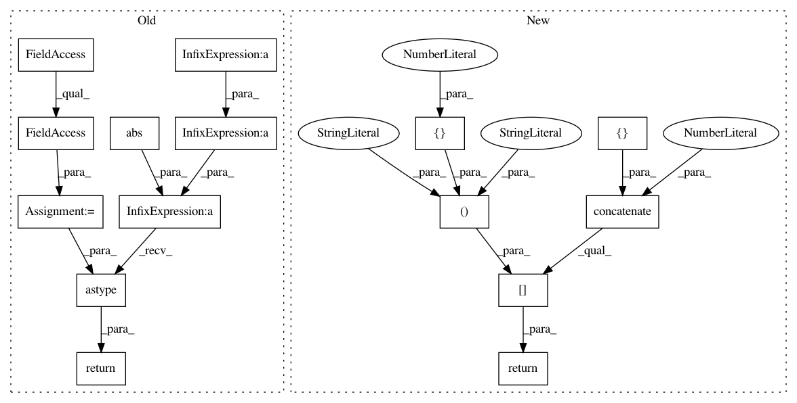

3dec3c177db7fb2c77eb38346a8d51075739d4d3,nt/speech_enhancement/merl_masks.py,,ideal_ratio_mask,#Any#Any#Any#,38
Before Change
:param eps: Regularizing parameter to avoid division by zero.
:return: Mask with shape (frames, 1, features)
out_type = S.real.dtype
return (np.abs(S) / (np.abs(S) + np.abs(N) + eps)).astype(out_type)
def wiener_like_mask(S, N, eps=1e-18):
Calculates the "Wiener like" mask.
After Change
:param eps: Regularizing parameter to avoid division by zero.
:return: Mask with shape (frames, 1, features)
return mask.ideal_ratio_mask(
np.concatenate([S, N], 1),
component_axis=1,
eps=eps
)[:, [0], :]
def wiener_like_mask(S, N, eps=1e-18):
Calculates the "Wiener like" mask.
In pattern: SUPERPATTERN
Frequency: 4
Non-data size: 15
Instances
Project Name: fgnt/pb_bss
Commit Name: 3dec3c177db7fb2c77eb38346a8d51075739d4d3
Time: 2016-08-02
Author: mail@lukas-drude.de
File Name: nt/speech_enhancement/merl_masks.py
Class Name:
Method Name: ideal_ratio_mask
Project Name: fgnt/pb_bss
Commit Name: 3dec3c177db7fb2c77eb38346a8d51075739d4d3
Time: 2016-08-02
Author: mail@lukas-drude.de
File Name: nt/speech_enhancement/merl_masks.py
Class Name:
Method Name: wiener_like_mask
Project Name: fgnt/pb_bss
Commit Name: 3dec3c177db7fb2c77eb38346a8d51075739d4d3
Time: 2016-08-02
Author: mail@lukas-drude.de
File Name: nt/speech_enhancement/merl_masks.py
Class Name:
Method Name: phase_sensitive_mask
Project Name: fgnt/pb_bss
Commit Name: 3dec3c177db7fb2c77eb38346a8d51075739d4d3
Time: 2016-08-02
Author: mail@lukas-drude.de
File Name: nt/speech_enhancement/merl_masks.py
Class Name:
Method Name: ideal_amplitude_mask